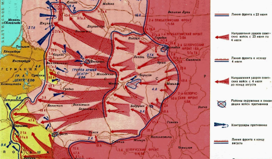

С января 1944-го начинается третий, освободительный этап Великой Отечественной войны. После череды неудач и значительных потерь Германия все еще оставалась сильным противником. Перейдя от попыток перехватить стратегическую инициативу к стратегической обороне немецкое командование старалось не допустить прорыва Красной Армии в Прибалтику и Восточную Пруссию на севере, в центре - к границе с Польшей, а на юге - к Днестру и Карпатам.
К началу 1944 года Советский Союз добился абсолютного перевеса над противником в технике, вооружении и количестве войск. Беспрецедентный массовый героизм советского народа обеспечил успешное проведение нескольких крупных военных операций, в результате которых стратегическая инициатива полностью перешла к Красной Армии. К концу января 1944 года была полностью снята блокада Ленинграда и освобождены Ленинградская область, Новгород, Псков. С освобождением Правобережной Украины весной советские войска впервые вышли на границу СССР. В мае были освобождены Одесса, Севастополь и весь Крым.
После наступления зимой 1943-1944 гг. линия фронта образовала в Белоруссии огромный выступ площадью около 250 тыс. кв. км, обращенный вершиной на восток. Он глубоко вклинивался в расположение советских войск и имел важное оперативно-стратегическое значение для обеих сторон. 3 июня 1944 года стартовала масштабная военная операция по освобождению Беларуси, получившая кодовое название «Багратион». Замысел операции предусматривал глубокими ударами 4-х фронтов прорвать оборону противника на 6-ти направлениях, окружить и уничтожить группировки врага на флангах белорусского выступа – в районах Витебска и Бобруйска, после чего, наступая по сходящимся направлениям на Минск, окружить и ликвидировать восточнее белорусской столицы главные силы группы армий «Центр». В дальнейшем, наращивая силу удара, выйти на рубеж Каунас – Белосток – Люблин.
Ни в одной из предшествовавших наступательных операций Красная Армия не имела такого количества артиллерии, танков и боевых самолетов, и такого превосходства в силах, как в Белорусской. К началу операции в составе наступающих войск насчитывалось 1,2 млн человек, 34 тыс. орудий и минометов, 4070 танков и самоходно-артиллерийских установок, около 5 тыс. боевых самолетов. Советские войска превосходили противника по живой силе в 1,5 раза, орудиям и минометам – в 4,4, танкам и самоходно-артиллерийским установкам – в 4,5 и по самолетам – в 3,6 раза.
Белорусская наступательная операция группы фронтов, продолжавшаяся 68 суток, является одной из выдающихся операций не только Великой Отечественной, но и всей Второй мировой войны. Ее отличительная особенность – огромный пространственный размах и впечатляющие оперативно-стратегические результаты. В результате успешного тактического взаимодействия войск 1-го Прибалтийского, 1-го, 2-го и 3-го Белорусских фронтов, а также деятельности партизанских отрядов по дезорганизации работы тылового обеспечения противника восточнее Минска было уничтожено 30 немецких дивизий группы немецких армий «Центр».
Успешное наступление 1-го Прибалтийского, 3, 2 и 1-го Белорусских фронтов на западном направлении летом 1944 г. коренным образом изменило обстановку на всем советско-германском фронте, привело к резкому ослаблению боевого потенциала вермахта. В результате Белорусской операции были созданы благоприятные условия не только для нанесения новых мощных ударов по вражеским группировкам, действовавшим на советско-германском фронте в Прибалтике, Восточной Пруссии и Польше, на варшавско-берлинском направлении, но и для развертывания наступательных операций англо-американских войск, высадившихся в Нормандии.
Ялтинская конференция (4 — 11 февраля 1945) - вторая из трёх встреч лидеров стран антигитлеровской коалиции — Великобритании, СССР и США, посвящённых установлению послевоенного мирового порядка. Конференция проходила в Ливадийском дворце г. Ялта, Крым.
Главным вопросом Ялтинской конференции были уже не столько военные планы разгрома Германии, сколько проблема послевоенного устройства мира. После согласования условий безоговорочной капитуляции Германии и перспектив её демилитаризации участники встречи приняли решение о созыве учредительной конференции Организации Объединенных Наций. Главной задачей ООН должно было стать предотвращение войн в будущем.
В ходе Ялтинской конференции также была принята также Декларация об освобожденной Европе, которая провозглашала следующий тезис: после окончания войны СССР, США и Великобритания при решении всех вопросов европейского развития должны согласовывать свои действия. Кроме того Советский Союз вновь подтвердил свое обещание вступить в войну против Японии через 2-3 месяца после разгрома Германии.
16 апреля 1945 года началось заключительное сражение в Великой Отечественной войне - битва за Берлин. В Берлинской операции участвовали войска 2-го Белорусского (командующий маршал К.К. Рокоссовский), 1 -го Белорусского (маршал Г.К. Жуков), 1-го Украинского (маршал И.С. Конев) фронтов, а также часть сил Балтийского флота (адмирал В.Ф. Трибуц). 21 апреля танкисты 3-й гвардейской танковой армии, ведомой лучшим танковым генералом Советской Армии П.С. Рыбалко, первыми ворвались на северо-восточные окраины Берлина. Спустя 4 дня войска 1-го Белорусского фронта перерезали немецким войскам все пути, ведущие к городу с запада, и соединились северо-западнее Потсдама с войсками 1-го Украинского фронта, окружавшими Берлин с юга. В 13 часов 20 минут того же дня войска 1-го Украинского фронта (5-я гвардейская танковая армия генерала А.С. Жадова) встретились в центре Германии в районе города Торгау на Эльбе с 1-й американской армией под командованием генерала К. Ходжеса , разрезав
немецкую оборону надвое. Окруженным в Берлине гитлеровским войскам отступать было некуда. 12-ая армия генерала В. Венка, ожесточенно обороняясь, надеялась на деблокирование столицы, но надежд оказались тщетными. На девятый день штурма Берлина, 30 апреля, в 21 час 50 минут сержант М.А. Егоров и младший сержант М. В. Кантария водрузили на рейхстаге Знамя Победы. За шесть часов до этого А. Гитлер и его жена Ева Браун покончили жизнь самоубийством. Днем позже их примеру последовал и Й. Геббельс со своим семейством.
В 6 часов 30 минут 2 мая начальник обороны Берлина генерал артиллерии Г. Вейдлинг сдался в плен и отдал приказ остаткам войск берлинского гарнизона о прекращении сопротивления. Столица Германии капитулировала. В середине дня сопротивление гитлеровцев в городе прекратилось. Тогда же совместными действиями войск 1-го Украинского и 1-го Белорусского фронтов были ликвидированы окруженные группировки немецких войск юго-восточнее Берлина. В этот день Москва салютовала доблестным победителям дважды: в 21 час залпами из 222, а в 23 часа - из 324 орудий.
В ночь с 8 на 9 мая был подписан акт о безоговорочной Капитуляция фашистской Германии. Так в военной истории гитлеровской Германии ставилась жирная точка с официальным оформлением итогов войны. 9 мая весь Советский Союз праздновал День Победы, а 24 июня 1945 года, спустя четыре года после начала войны, на Красной площади прошел долгожданный Парад Победы.